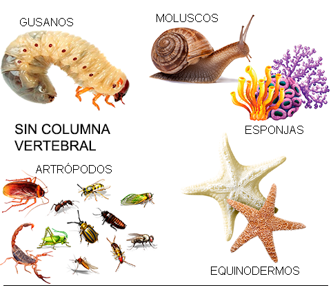
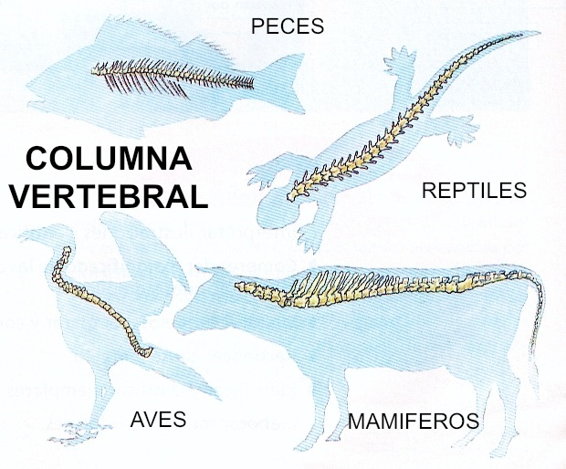

En este tema aprenderemos sobre La clasificación de los animales según su estructura corporal, el cual nos permitirá entender mejor la diversidad y complejidad del reino animal.
Los animales son seres vivos que se caracterizan por su capacidad de movimiento, reproducción y adaptación a diversos hábitats. Al estudiar estos animales, no solo aprendemos sobre su biología y ecología, sino también sobre la evolución y las interconexiones entre las diferentes formas de vida en nuestro planeta.
Según su estructura corporal, los animales se dividen en dos grandes grupos:
Esta clasificación se basa en la presencia o ausencia de una columna vertebral y nos ayuda a comprender mejor la diversidad del reino animal y las adaptaciones que cada grupo ha desarrollado para sobrevivir en su entorno.

 